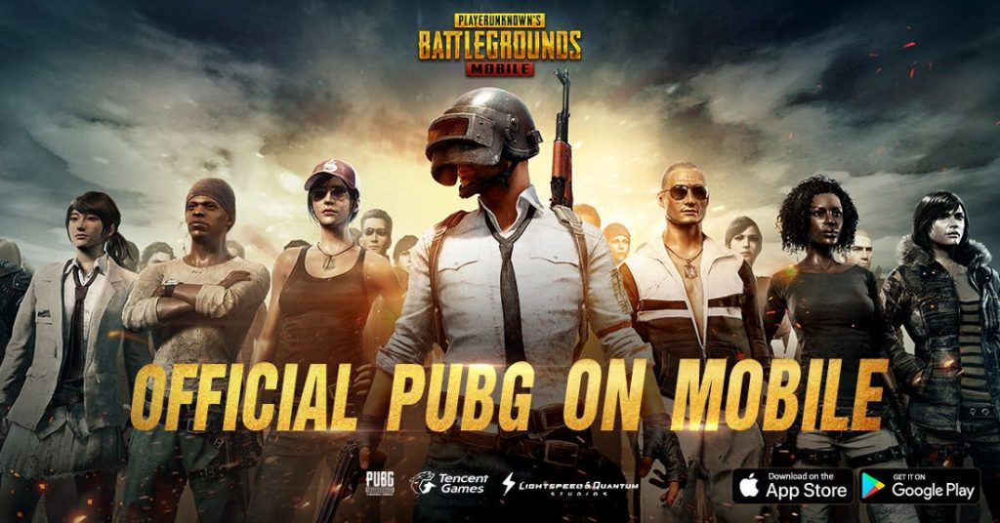
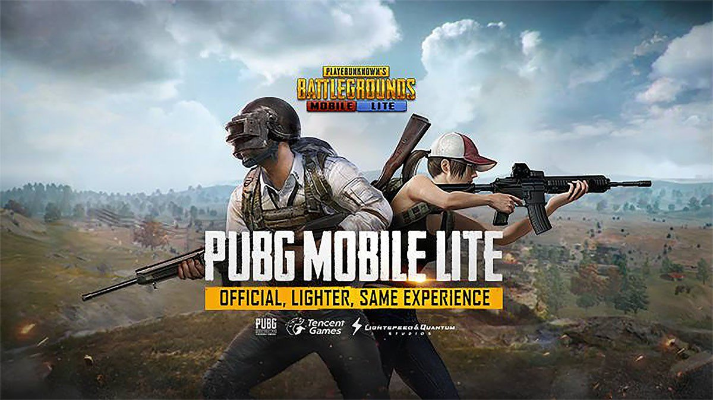

بلاير أنونز باتل غراوندز المعروفة باسم بوبجي
PUBG(بالإنجليزية: PlayerUnknown's Battlegrounds) أوساحات معارك اللاعبين المجهولين هي لعبة كثيفة اللاعبين على الإنترنت ولعبة بقاء صدرت بتاريخ 23 مارس 2017، وهي متوفرة على أجهزة ويندوز، وإكس بوكس ونوصدرت نسختان في أوائل سنة 2018 لمنصتي آي أو إس،وأندرويد من تطوير شركة تينسنت، والتي قامت بالتعاون مع شركة "بلوهول" لإصدار اللعبة على الهواتف المحمولة، وتعمل بنفس المحرك الذي تعمل به النسخة الأصلية. تم تطوير النسخة الأصلية من قبل شركة "بلوهول" على محرك أنريل إنجن 4. تحتوي على اللغة العربية.[2]

يا شعب العراق الشقيق عندكم حل غير انوا تشغلوا vpn لانوا vpn بيعمل لاغ بللعبة
اولا بتدخلوا على
١- شبكة الواي فاي
بتغطوا علشبكة اللي انتو متصلين فيها ضغطة طويلة
٢-اعدادات متقدمة
٣- اعدادات ip
بتحطوا ثابت
٤-بتنزلوا لتحت مكتوب
DNS 1. DNS 2
بتكتبوا بل DNS 1
194.187.251.67
وبتكتبوا بل DNS 2
78.137.123.30
ومبروك عليكن بتشتغل الببجي نظامي اهلكن بسوريا سبقوكم فيها 😂
يرجى من الجميع وضع لايكات للتعليق منشان الجميع يشوفوه